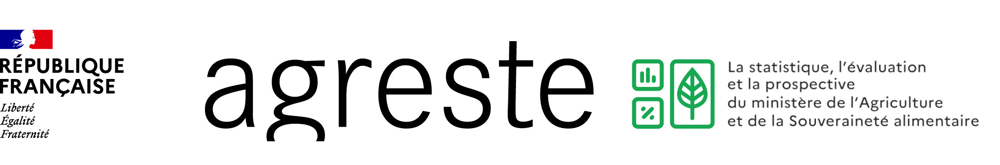

Ressources disponibles
Le site des formations
dispensées au MASA
Les tutoriels liés à l’écosystème
dispensés au MASA
Le site officiel Agreste
Le site officiel du Ministère de l'Agriculture et de la Souveraineté Alimentaire